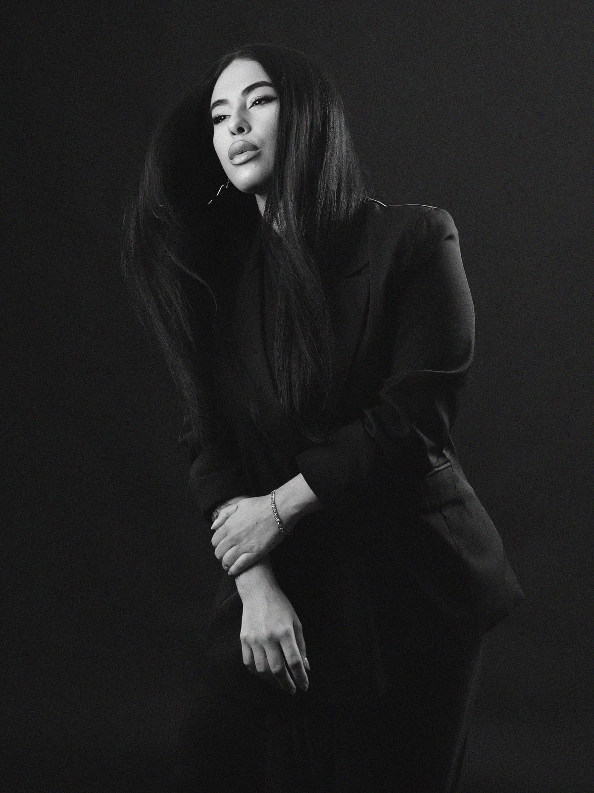
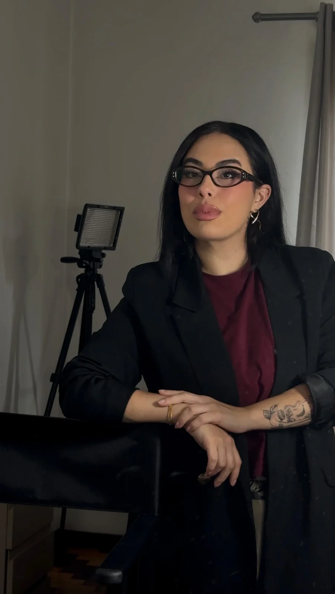
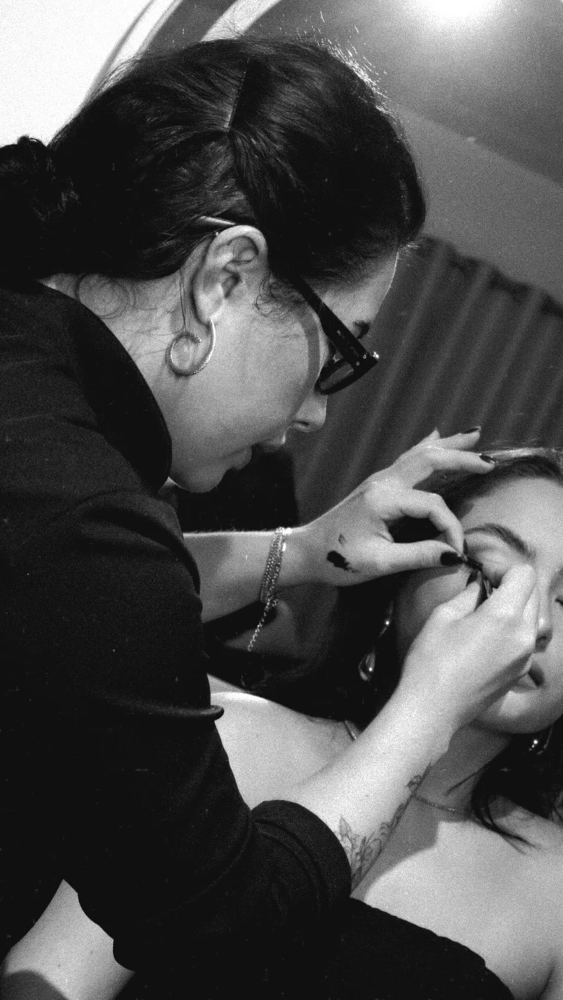

Maquiagem & Visagismo · Criciúma
A maquiagem
começa em você.
Sua beleza, seu momento, sua maneira de se reconhecer. Atendimentos e ensino de maquiagem com Letícia Boaroli.
- Atendimentos
- Noivas
- Cursos

10 anosmaquiando e ensinando
- 10 anosformando maquiadores e atendendo
- Visagismopós-graduação em Maquiagem & Visagismo
- Criciúmao encontro acontece aqui
- AtendimentosPara o seu momento.Uma produção que conversa com a ocasião e com o jeito como você quer se sentir.
- NoivasPara um dia que é seu.Maquiagem que participa da sua história, com atenção ao que torna você única.
- CursosPara descobrir e evoluir.Conhecimento para quem deseja aprender maquiagem e desenvolver seu olhar.
02 · Portfólio
Há beleza
em cada detalhe.
Texturas, tons e diferentes expressões. Escolha uma produção para ver de perto.
03 · Noivas
Um dia inteiro
para ser você.
Entre a expectativa e o espelho, existe um momento só seu. A maquiagem acompanha a história que você quer viver e lembrar.
- Sua identidade em primeiro plano.
- O cuidado também está nos bastidores.
- Conversa sobre o que faz sentido para o seu dia.
04 · Aprender com a Letícia
O conhecimento vai
além do pincel.
Há 10 anos formando maquiadores. Um caminho para desenvolver técnica, ampliar repertório e construir um olhar próprio.
Para quem quer se desenvolver
Formação profissional.
Converse sobre os cursos, pré-requisitos, conteúdos e formatos que combinam com sua etapa na maquiagem.
Quero saber dos cursosPara se maquiar
Automake sem Mistério.
O curso de automaquiagem divulgado pela Letícia, para quem quer aprender a se maquiar.
Conhecer o curso Confira o conteúdo e as condições na página oficial.Aprender também é encontrar sua maneira de olhar.
05 · A Letícia
Antes da técnica,
um olhar para você.
Letícia Boaroli é maquiadora e educadora em Criciúma, pós-graduada em Maquiagem & Visagismo. Sua atuação reúne atendimentos e ensino, com uma história de 10 anos formando maquiadores e produzindo para diferentes momentos.
- Maquiagem & VisagismoUma formação que conecta técnica e leitura da beleza.
- Atender e ensinarDuas formas de compartilhar seu trabalho com a maquiagem.
- Uma relação com a belezaO portfólio reúne produções, noivas e bastidores.


- Identidadeem cada escolha
- Técnicaque se desenvolve
- Presençano seu momento
06 · Por trás da produção
A beleza também
acontece no caminho.
Registros de prática, preparação e cuidado. Um olhar para o que acontece antes da produção ficar pronta.
Deslize para explorar. Toque para ampliar.
A prática de perto.Aprendizagem e atenção ao processo. Um tempo de cuidado.O que acontece antes do resultado. Um encontro com o espelho.Bastidores de um momento especial.
07 · Vamos conversar
Me conte o seu
próximo momento.
Um atendimento, uma data importante ou vontade de aprender? A conversa começa por aqui.
Atendimentos e cursos em Criciúma.
Datas, formatos e valores são confirmados na conversa.
Antes do nosso encontro
Algumas respostas
para começar.
Onde a Letícia atende?
A Letícia atua em Criciúma. Confirme o endereço do atendimento, deslocamento e disponibilidade diretamente com ela.
Como consulto uma data para maquiagem?
Escolha atendimento ou produção de noiva no formulário e, se quiser, informe a data e a ocasião. A disponibilidade é confirmada na conversa.
Há cursos para quem quer se maquiar?
Sim. O perfil divulga o Automake sem Mistério. Você pode conhecer a página oficial do curso ou falar pelo canal de cursos.
Quero me desenvolver profissionalmente. Como começo?
Selecione Formação profissional. O site abre o canal público de cursos, onde você pode consultar programa, nível indicado, formato e condições.
O formulário já reserva meu horário?
Não. Ele prepara uma mensagem e abre o contato adequado. Você revisa e envia no WhatsApp; a reserva ou inscrição é confirmada diretamente na conversa.